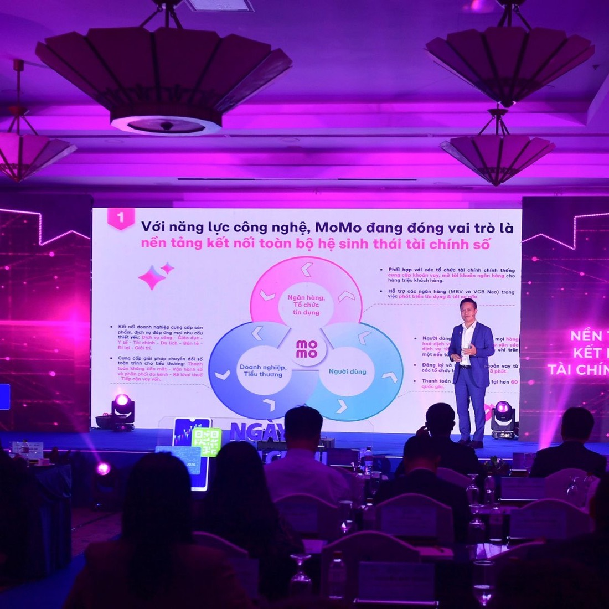
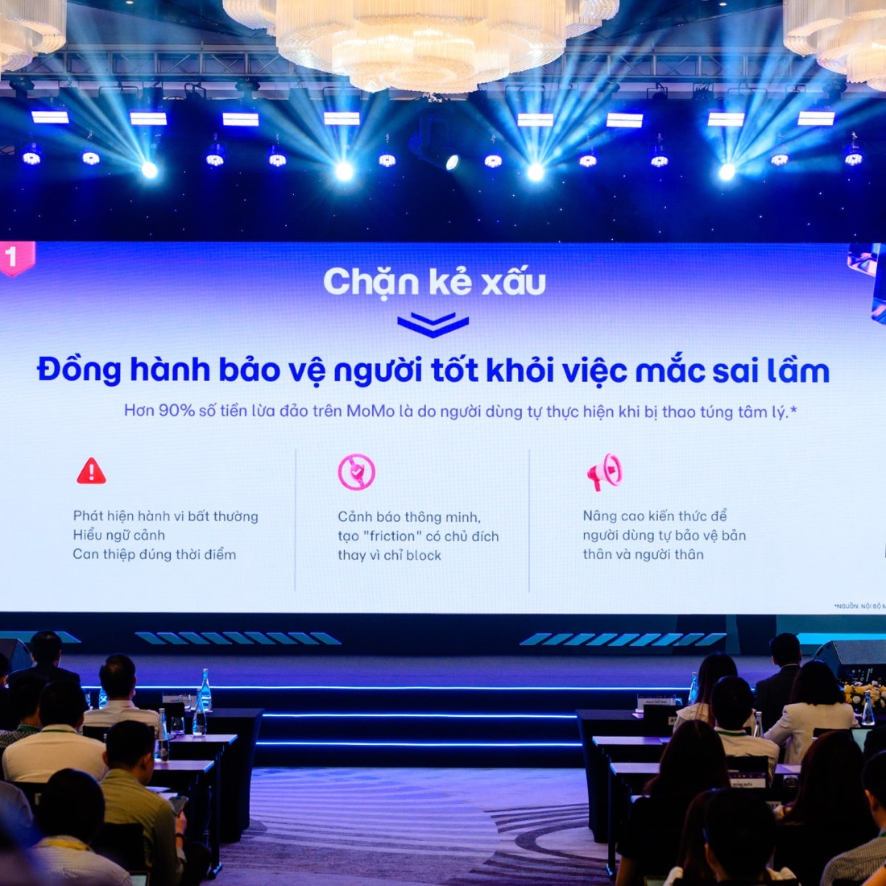

Payments keep booming. Active wallets are shrinking. This deck is how MoMo grows its next revenue curve from retention, frequency and ARPU — not new installs.

Independent portfolio analysis on public data — SBV, NAPAS, Decision Lab, company disclosures, all cited on the last slide. Not an internal MoMo project; imagery is MoMo's own, published on momo.vn. I first met MoMo as a research subject: my UEH Young Researcher study applied UTAUT2 to e-wallet purchase behavior.
Indexed, 2023 = 100. NAPAS 20M → 26M → 32M+ tx/day vs SBV 36.2M → 34.3M → 30.3M active wallets.1,4
VietQR grew 8x in 2023, 2.2x in 2024; ~90M bank accounts now scan the same codes MoMo does. The core wallet job is commoditized.2,3
Zero-fee transfers since 2022 plus NAPAS fee cuts killed the payment rail as a profit pool. Nobody monetizes the transfer anymore.5
Moca dead (7/2024). SmartPay's consumer wallet dead (8/2025). ZaloPay pivoted off "e-wallet". MoMo penetration 68% → 61% while bank apps became the #3 platform.6,7
When the product everyone fought over becomes free plumbing, the war moves from winning users to keeping habits.
First full-year profit in 2024 — 347.5 billion VND on revenue up 27% — and profitable again in 2025.11 The model works when users transact. Write growth as an equation and the leverage is obvious:
~10M MAU on ~40M registered. Install growth is capped by a shrinking market.
QR is a habit MoMo shares with every bank app. A second habit is one it owns.
Payments earn ~nothing. Credit, savings, investment carry the P&L — the Toss and Paytm pattern.14
Installed for one promo. Bank app covers QR.
0 tx in 90 days"It worked. Anyway." Zero switching cost.
1st tx · no 2nd categoryScans QR only. Habit without loyalty — promo-sensitive.
1 category ≥ 90% of txBills + transport + piggy bank live here. Leaving costs effort.
2+ categories / 30 daysVí Trả Sau, Vay Nhanh, savings. Where the P&L lives.
Financial product activeThe cliff is states 2–3: users who never form a second habit are renting MoMo, not living in it — and rented users churn to whichever app pays next.

Grab investor data: 1-year retention jumps 37% → 88% from one to 3+ services; multi-service users spend ~4x. Ant's IPO filing: 80% of Alipay users ran 3+ categories.13
Bain: +5% retention → >25% profit in financial services. The industry already moved: SEA finance-app remarketing spend +193% in 2025 while installs went negative.15,17
Ipsos Indonesia: 71% of e-wallet users arrived for promotions; only 23% stay for them. This plan pays for behavior change, not transactions.16
One experiment, fully specified. Wins → it becomes the onboarding default and the template for H2–H5. Loses → it dies cheaply in six weeks.
| Hypothesis | A guided path to one extra money category within 30 days of first transaction lifts 30-day second-category adoption by +8pp and M2 retention by ≥5pp. |
| Arms | A control · B guided "next habit" ladder on the Moni surface · C = B + one-time 20.000đ seed that only activates inside the second habit — pays for behavior, not transactions. |
| Primary metric | % of new-active users with a 2nd-category transaction within 30 days. Secondary: M2 retention, tx per active, time-to-second-category. |
| Guardrails | Uninstalls · notification opt-outs · incentive cost per incremental converter · support tickets. Credit is excluded from EXP-01 by design. |
| Size & runtime | ~1,000 users/arm detects +8pp (α .05, power .8) — MoMo onboards multiples of that daily. 6 weeks: 2 to fill cohorts, 4 to observe. |
| Decision rule | B beats A → ship as default. C beats B net of incentive cost → keep the seed for high-value segments. Neither → kill, publish the learning, move to H2. |
Baselines are unknowable from outside — placeholders by design. The deliverable is the design, guardrails and kill rules; week one of real data fills the numbers.
Monthly users with 2+ money habits
Trailing twin: revenue per multi-habit user. Each experiment owns exactly one input metric, reviewed weekly: 30-day 2nd-category rate ← payday conversion ← reactivation-to-stick.
Sequence by proof: EXP-01 first (cheapest, fastest read), payday triggers second, bill autopilot third, credit graduation only on clean cohorts, dormant winback after the engine works on actives.
Assumptions: 10M MAU (self-reported, 3/2026) · 55% single-habit share (assumption — no public mix data) · 20% conversion is the program target EXP-01 validates · no revenue projection, because product mix decides it and is unknowable outside-in. The structural claim stands: multi-habit users are where fintech P&L accrues — Toss turned profitable in 2024 only after multi-product expansion.10,14
Cashback buys transactions, not habits. Mitigation: incentives only in arm C, capped, paid on behavior change, killed at the cost ceiling.16
Biometric checks >10M VND, 100M VND/month wallet caps. Mitigation: habits built on small recurring amounts sit far below every threshold.8,9
"30M+ users" is cumulative, not active. Mitigation: dashboards run on MAU, cohorts and habit counts only.10
The pitch in one line: MoMo already paid to acquire 40 million users. Make the next 30 million transactions come from them.
Pull real cohorts: category mix, second-habit baseline, payday curves. Rebuild this deck's model with internal data. Instrument the five states.
Launch Second Habit exactly as specified. Draft the payday-trigger pilot (H2) in parallel with CRM.
Read EXP-01 against the decision rule. Ship the winner as default or kill it publicly. The metric tree becomes the team's weekly cadence.
Official data (SBV, NAPAS), third-party research (Decision Lab, Ipsos), primary filings (Ant IPO, Bain/HBR) and company disclosures — self-reported figures labeled. Compiled July 2026. Known conflicts (e.g., MoMo revenue scope, ~3,300 vs 9,400 tỷ VND across sources) are excluded from the argument rather than resolved by guesswork.